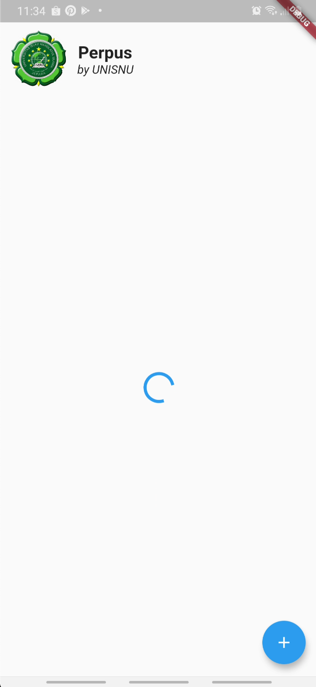

(R)ead
Pada bagian (R)ead ini, kita akan membaca data dari REST API dengan response yang berformat JSON. Berdasarkan standard https://tools.ietf.org/html/rfc2616#section-9.3, kita menggunakan GET sebagai "HTTP verb" untuk melakukan prosedur (R)ead ini.
Hapus data mockup
Langkah pertama, kita harus menghapus data-data mockup yang telah kita buat. Perhatikan dan hapus baris yang ter-highlight berikut:
62
63
64
65
66
67
68
69
70
71
72
73
74
75
76
77
78
79
80
81
82
83
84
85 | ...
// _list ini adalah model utama dari daftar buku kita
// akan digunakan untuk menampilkan daftar buku
// yang didapat dari REST API
List<BookListModel> _list = [
// Kita buat dummy data atau data palsu
// hanya untuk tujuan mockup dulu
BookListModel(
id: "1",
title: "Judul 1",
imagePath: "assets/book.png",
),
BookListModel(
id: "2",
title: "Judul 2",
imagePath: "assets/book.png",
),
BookListModel(
id: "3",
title: "Judul 3",
imagePath: "assets/book.png",
),
];
...
|
Sehingga menjadi:
| ...
// _list ini adalah model utama dari daftar buku kita
// akan digunakan untuk menampilkan daftar buku
// yang didapat dari REST API
List<BookListModel> _list = [];
...
|
Fungsi (R)ead di provider
Seperti pada (C)reate, kita juga menggunakan provider untuk meletakkan fungsi (R)ead sesungguhnya yang terhubung langsung ke REST API.
Untuk itu, buka kembali file lib/providers/booklist_provider.dart, kemudian perhatikan dan ubah/tambah code sesuai pada bagian yang ter-highlight berikut:
82
83
84
85
86
87
88
89
90
91
92
93
94
95
96
97
98
99
100
101
102
103
104
105
106
107
108
109
110
111
112
113
114
115
116
117
118
119
120
121
122
123
124
125
126
127
128
129
130
131
132
133
134
135
136
137 | ...
} catch (e) {
// Jika terjadi error
Map<String, dynamic> resInvalid = new Map<String, dynamic>();
resInvalid["statusCode"] = statusCode != null ? statusCode : 400;
resInvalid["message"] = e.toString();
this._isCreating = false;
notifyListeners(); //Prosedur standard untuk memberitahu "listener" bahwa ada perubahan
return resInvalid;
}
}
// _isReading Digunakan untuk menampilkan "loading indicator"
// Dan juga logic lain yang membutuhkannya
bool _isReading = false;
// Getter dari _isReading
bool get isReading {
return this._isReading;
}
Future<void> read(BuildContext context) async {
// Tandai "true" agar aplikasi tahu sedang terjadi proses (R)ead
this._isReading = true;
final settingData = Provider.of<SettingProvider>(context, listen: false);
// Susun URL dengan menggunakan variable dari "setting provider" ditambah pattern API kita
String url =
"${settingData.setting.apiHost}/perpus-api/booklist/${settingData.setting.userName}";
// res adalah variable untuk menampung Response dari server
http.Response res;
// ada kemungkinan error saat http.get(), jadi gunakan block "try"
try {
final resTmp = await http.get(url);
res = resTmp;
} catch (e) {
this._isReading = false;
throw (e);
}
List<BookListModel> bookListData = (json.decode(res.body)["data"]
as List) // Decode response sebagai "List"
.map((i) => BookListModel.fromJson(
i)) // Format "List" agar sesuai dengan BookListModel
.toList(); // Terakhir, convert agar jadi "List of BookListModel" ( List<BookListModel> )
// Menyimpan state ke variable _list,
// ini variable yg akan dibaca oleh component yang membutuhkan daftar buku
this._list = bookListData;
// Kembalikan _isReading ke false yang berarti proses (R)ead selesai
this._isReading = false;
// notifyListeners() Memberitahukan kepada semua listener bahwa ada perubahan di provider ini
notifyListeners();
}
}
|
"Jahit" API Request ke Grid
Saat nya "menjahit" API Request kit Grid view yang telah kita buat. Jika sebelumnya kita menggunakan data "mockup", kali ini kita akan benar-benar mengambil dari REST API Server.
Panggil read() dari BookListProvider
Buka file lib/widgets/home/book-list.dart. Pada file ini, kita hanya akan memicu fungsi read() yang telah kita buat pada BookListProvider yang baru saja kita tambahkan. Dengan memanggil fungsi read() tersebut, aplikasi kita akan mem-fetch data dari REST API. Sehingga setelah proses selesai, component "Grid view" kita akan tahu ada perubahan data dan me-render nya.
Perhatikan dan ubah/tambah sesuai code yang ter-highlight berikut:
13
14
15
16
17
18
19
20
21
22
23
24
25
26
27
28
29
30
31
32
33 | ...
class _BookListState extends State<BookList> {
// _isInitialized adalah helper variable
// berguna untuk mencegah "pemanggilan berulang"
// digunakan pada fungsi "if" dibawah
// karena didChangeDependencies() pada komponen akan dipanggil lebih dari 1 kali
bool _isInitialized;
@override
void didChangeDependencies() {
// If dibawah ini mencegah pemanggilan ganda dari blok didalamnya
if (this._isInitialized == null || !this._isInitialized) {
context.read<BookListProvider>().read(context);
this._isInitialized = true;
}
// Memanggil "parent" didChangeDependencies(), harus selalu dilakukan
super.didChangeDependencies();
}
@override
Widget build(BuildContext context) {
...
|
Sebagai catatan, kita perlu melakukan pemanggilan super.didChangeDependencies(); pada akhir prosedur, karena kita telah meng override fungsi didChangeDependencies(). Yang mana fungsi tersebut adalah bagian dari Widget lifecycle. Oleh karena itu agar fungsi-fungsi standard tetap dijalankan setelah fungsi kita, kita harus memanggil super.didChangeDependencies(); agar lifecycle tersebut tetap berjalan seperti saat belum kita override
Jalankan ulang aplikasi, tunggu beberapa saat. Jika semua sudah benar, seharusnya saat ini kita akan melihat aplikasi android kita sudah menggunakan data dari server yang sudah kita input sebelumnya.
Tampilkan "loading indicator"
Mengunggu tanpa kepastian akan membuat tidak nyaman, bahkan bisa membuat hayati lelah  . Karena itu mari mari kita atur UX agar membuat user merasa nyaman dengan behavior dari aplikasi kita. UX adalah singkatan dari User experience, yang berkaitan erat dengan UI ( User interface ) pada bidang frontend development.
. Karena itu mari mari kita atur UX agar membuat user merasa nyaman dengan behavior dari aplikasi kita. UX adalah singkatan dari User experience, yang berkaitan erat dengan UI ( User interface ) pada bidang frontend development.
Masih pada file lib/widgets/home/book-list.dart, perhatikan dan ubah/tambah sesuai code yang ter-highlight dibawah ini:
30
31
32
33
34
35
36
37
38
39
40
41
42
43
44
45
46
47
48
49
50
51
52
53
54
55
56
57
58
59
60
61 | ...
@override
Widget build(BuildContext context) {
var apiHost =
Provider.of<SettingProvider>(context, listen: false).setting.apiHost;
List<BookListModel> bookList = context.watch<BookListProvider>().list;
bool isReading = context.watch<BookListProvider>().isReading;
return isReading == null || isReading
? Column(
mainAxisAlignment: MainAxisAlignment.center,
children: <Widget>[
CircularProgressIndicator(),
],
)
: GridView.builder(
padding: EdgeInsets.all(10),
itemCount: bookList.length,
itemBuilder: (ctx, i) => BookListItem(
id: bookList[i].id,
apiHost: apiHost,
imagePath: bookList[i].imagePath,
title: bookList[i].title,
),
gridDelegate: SliverGridDelegateWithFixedCrossAxisCount(
crossAxisCount: 2,
childAspectRatio: 8 / 7,
crossAxisSpacing: 10,
mainAxisSpacing: 10,
),
);
|
Simpan dan jalankan dengan tombol restart  . Seharusnya kita melihat tampilan "loading indicator" seperti dibawah ini:
. Seharusnya kita melihat tampilan "loading indicator" seperti dibawah ini:
